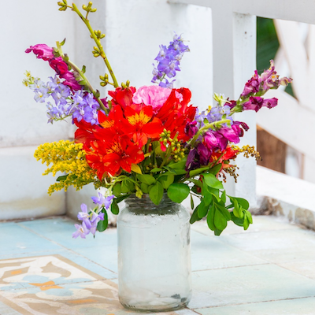

Ceramic Potted Herbs
A delightful set of fresh potted herbs — perfect for the kitchen or gifting.
$7.99
Was $17.99
Fran's Flowers was founded in 1995 by Francine Miller to share joy, beauty, and connection with the Mission District of San Francisco. Thirty years later, we remain rooted in that vision, brightening lives with every bouquet while supporting our community. Ten percent of each sale continues to fund efforts to fight homelessness across the Bay Area.
Thank you for helping us grow kindness one flower at a time.
A delightful set of fresh potted herbs — perfect for the kitchen or gifting.
$7.99
Was $17.99

A vibrant, rustic mix of seasonal wildflowers — unique every week, always beautiful.
$19.99
Was $29.99

A cheerful arrangement of fresh sunflowers, perfect for brightening any room.
$12.99
Was $19.99

Bold dahlias in warm oranges, pinks, and reds — the season's showstopper arrangement. Dahlias are hand-selected daily from our local growers and arranged fresh each morning.
☀️ Best for birthdays & celebrations — only here 'til September!
$42.99
"Fran's Flowers has been our go-to for every special occasion for over ten years. The arrangements are always stunning and so thoughtfully made. Nothing beats walking in and being greeted by that incredible scent!"
"I ordered a last-minute birthday bouquet and Fran's pulled it off beautifully. The sunflowers were so fresh they lasted two full weeks! I won't go anywhere else for flowers in the city."
"As a wedding planner, I've worked with dozens of florists. Fran's is in a class of their own — creative, reliable, and genuinely passionate. My clients always rave about the flowers."